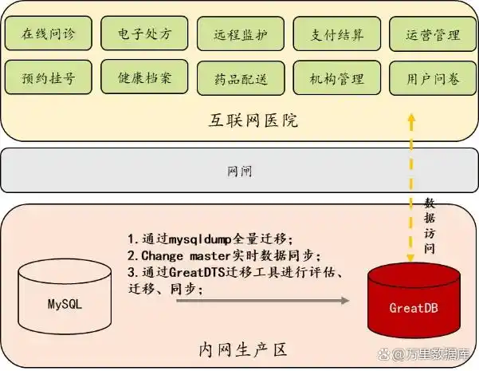

为医疗数字化转型装上“安全锁” MySQL 5.7平滑替代攻略来了！
信息安全和数据安全已成为各行各业的重中之重。医疗行业作为关乎民生的重要行业领域，对数据安全的要求更为严格。因此，采用安全、可靠、国产的数据库软件就成为医院信息化建设的重要任务之一。
某大型综合医院的互联网医院平台业务系统构建于开源数据库MySQL 5.7版本之上，由于医院缺乏专业的数据库技术团队，建成后一直由开发商代为运维。2024上半年，该业务系统遇到数据库不稳定的情况，运行时好时坏，由于医院信息中心的数据库运维能力相对较弱，一直找不到运行不稳定的根本原因，给信息中心工作带来很大困扰。
因此，医院计划进行数据库国产化替换工作。一方面，医院作为民生服务的重要机构，政府大力支持其关键信息基础设施国产化，减少对国外数据库技术的依赖，以提升医疗信息系统的自主可控能力，使用国产数据库可以更好地保障数据安全，实现技术自主，并且积极做好数据库迁移技术的储备也是信息科重点工作之一。另一方面，该大型综合医院受制于信息中心较弱的数据库运维能力，考虑到若引入架构复杂的国产数据库，将会为运维工作带来更大挑战。
互联网医院平台业务系统对数据库有哪些需求？
1、专业的数据库技术服务能力
医院现使用的开源数据库MySQL 5.7版本没有专业的数据库厂商提供技术支持，由开发商代理维护，出现问题不能及时解决，导致业务系统的稳定性受到影响，因此新选用的数据库需要具备专业的数据库技术服务能力。
2、数据安全
医院属于关键民生行业，涉及大量病人的隐私信息，要确保数据的安全性，避免数据泄露、丢失等安全风险。
3、便捷迁移
互联网医院平台业务系统是医院一个重要的对外服务平台，系统的停机时间非常有限，数据库替代方案需要以最小的改动、最短的停机窗口时间来完成数据库迁移替换。
4、易管理易维护
医院信息科运维人员在数据库运维方面的能力相对薄弱，替换后的数据库要保障在现有技术能力上，轻松实现新数据库高效顺畅的运维管理。
迁移替换五步法 平滑替代MySQL 5.7
万里安全数据库GreatDB是一款完全兼容MySQL语法的国产数据库软件，可以顺畅平滑地替换MySQL数据库，拥有更高的安全性和可靠性，可提供高效、专业、易用的MySQL平替解决方案。
GreatDB采用国密加密算法，拥有完善的权限管理机制，能有效防止越权访问，支持数据库加密功能，保护敏感数据隐私。此外，GreatDB拥有多节点高可用集群、远程异地容灾等能力，能为客户提供商业化的数据库技术能力，确保业务持续稳定运行。
该医院的互联网医院平台，将依托万里安全数据库GreatDB平滑的数据库迁移和切换能力，构建安全可靠、高性能、高可用的数据库支撑底座。届时，患者的就诊记录、检查报告、医嘱数据等各类重要隐私信息，将得到有效保护，实现数据资产的持续沉淀与积累。

▲互联网医院平台业务系统部署方案架构图
第一步：适配测试
万里安全数据库GreatDB具有广泛的兼容性，兼容主流X86和ARM架构CPU，主流国产操作系统和中间件。客户的适配环境为X86+麒麟操作系统，万里数据库经过快速部署即可投入使用。
第二步：数据导入，应用联调
由于万里数据库完全兼容MySQL语法，原来MySQL中的数据可借助相关工具快速实现导出和导入，极为方便。应用侧只需更新驱动文件，连入万里数据库后就能实现正常运行，无需代码改造。
第三步：正式迁移
经过适配测试后，应用平台的功能、数据和迁移流程都得到了测试与验证。正式迁移阶段，按照生产的性能规模配置数据库，申请窗口导入数据，应用侧切换连接到万里数据库即可实现正常运行。
第四步：数据库运维管理
在数据库的迁移替换过程中，万里数据库不仅提供全程专业的数据迁移服务及支持保障，还配备智能化的数据库运维管理平台GreatADM，对数据库的运行情况、SQL执行情况进行监控管理。GreatADM拥有一键巡检能力，可对数据库进行定期巡检，降低故障风险，让运维人员能直观可视化地监控数据库的运行状态。
第五步：专业技术培训
万里数据库作为从事基础软件研发超过20年的专业数据库厂商，可为客户方运维人员提供专业的数据库产品技术培训，让用户无惧后期运维工作。
总体而言，万里安全数据库GreatDB与原有的MySQL数据库可实现无缝兼容，系统迁移过程中无需进行代码改造,不影响业务的正常运转，将改造成本和对业务的影响降至最低。万里数据库拥有多个重点行业成熟的数据库迁移替换实践经验，能为互联网医院平台的数据库切换提供全方位技术保障。
方案优势
完全兼容标准MySQL协议，业务0改造
万里安全数据库GreatDB完全兼容MySQL协议，继承MySQL生态，使数据库迁移对业务应用0改造，可实现无缝平滑迁移，是平滑替换MySQL的更优选择。
大幅提升系统自主可控能力
安全数据库GreatDB由万里数据库自主研发，具有完整的自主知识产权，可降低国外技术依赖，提高系统的自主可控能力。GreatDB也是首批通过国家安全可靠测评的数据库产品之一，是经过国家层面严格测试的信创数据库。
便捷的部署运维能力
万里数据库配套提供图形化的数据库运维管理平台GreatADM，可自动化完成数据库的部署、管理升级、备份、巡检等运维管理工作，支持SQL语句查询与结果集展现、用户和库表管理，让运维人员能可视化、直观便捷地实现数据库运维。
提供企业级安全能力
万里数据库具备逻辑备份加密、表空间国密加密、Clone 压缩加密、密码限制增强等多项企业级安全特性，能全面满足医疗行业的数据安全需求。
本次大型综合医院互联网医院平台的数据库国产化替代工作，是MySQL替换的一次成功实践，坚定了用户国产化替换的信心。万里数据库作为专业数据库厂商的商业化技术服务能力，也让系统运行更加稳定、高效。
未来，医院所属的心电诊断、儿保、电子签名、等级评审、排队叫号等系统也将陆续走上数据库国产化替代道路，万里数据库将不懈努力，为医院所在的医疗行业数字化转型装上"安全锁",也为患者的数据隐私筑起一道坚实防线！